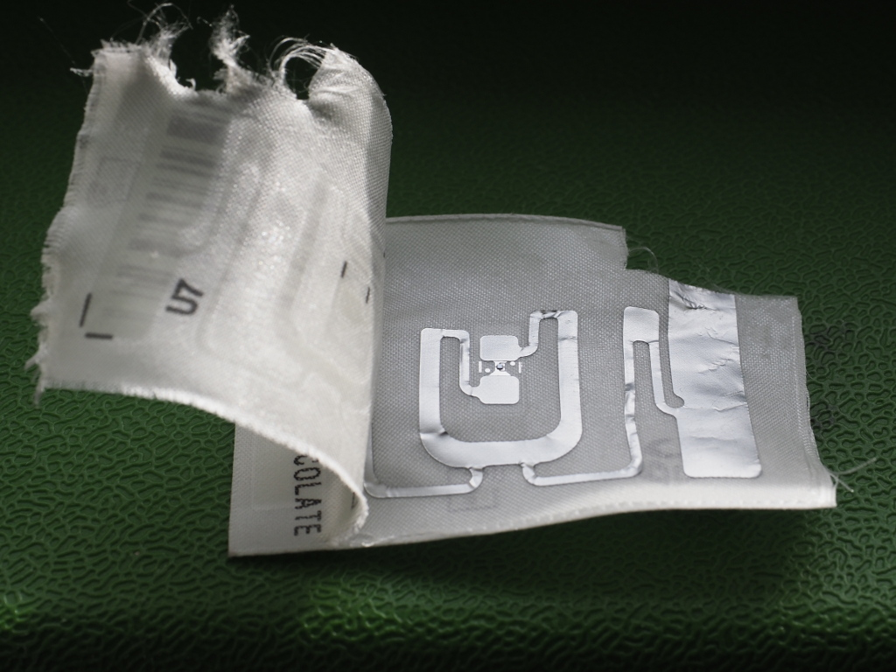
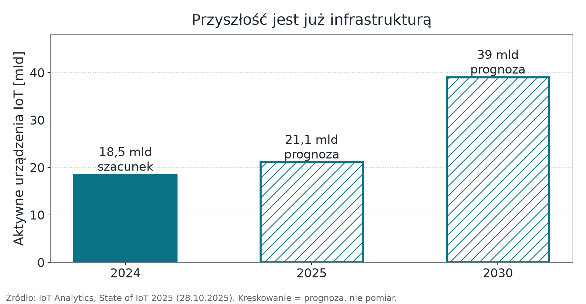
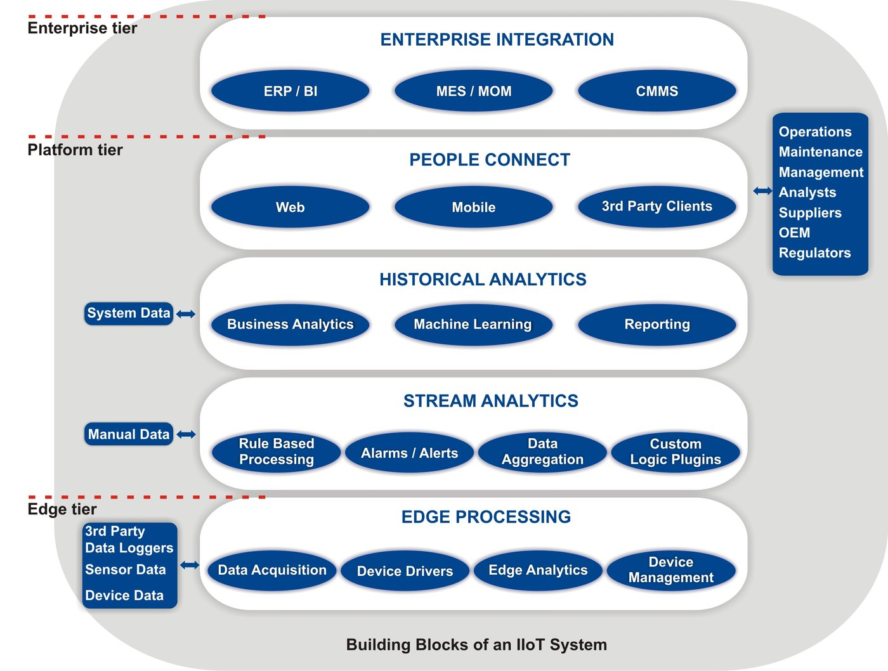

Wykład 1 — od obserwacji świata do zapisanej specyfikacji
Wydział Inżynierii Środowiska i Inżynierii Mechanicznej
Uniwersytet Przyrodniczy w Poznaniu
Pytanie modułu: co dokładnie budujemy i skąd będziemy wiedzieć, że jest gotowe?
Fot. U.S. Navy, domena publiczna
Zanim maszyny zaczęły rozmawiać autonomicznie, trzeba było zbudować drogi.
Cola, kod i chęć oszczędzenia sobie spaceru.
finger coke@cmua.Dlaczego to nadal jest wzorzec
Zmierzono stan fizyczny rzeczy i udostępniono go w sieci bez człowieka w łańcuchu. Wszystko, co robimy przez resztę semestru, jest rozwinięciem tego jednego pomysłu.

Etykieta RFID w metce odzieżowej. Fot. Boevaya mashina, CC BY-SA 4.0
Prawdziwy IoT zaczyna się tam, gdzie człowiek przestaje być głównym twórcą danych.

IoT Analytics, State of IoT 2025. Liczba nie obejmuje telefonów i komputerów.
Wymagania systemu wynikają z decyzji, którą ma wesprzeć — nie z listy czujników.
Środowisko i produkcja rolna
Przemysł
Infrastruktura i zasoby
Test sensowności
Jeżeli nikt nie podejmuje decyzji na podstawie pomiaru, zbudowaliśmy rejestrator, a nie system IoT.
Fot. PEO ACWA, CC BY 2.0
Podział, który pozwala wymieniać elementy bez przebudowy całości.
Cel projektowy: wymiana routera nie powinna wymagać nowego firmware czujnika (wystarczy ponowna konfiguracja), a zmiana czujnika — zmiany pulpitu.
Podział na trzy warstwy jest modelem dydaktycznym, który pomaga przypisać odpowiedzialność. Normy opisują więcej warstw — np. ITU-T Y.2060 cztery.

Sujata Tilak, IIoT System Building Blocks, Wikimedia Commons, CC BY-SA 4.0. Przemysłowy wariant tego samego pomysłu: brzeg · platforma · przedsiębiorstwo.
Telemetria idzie w górę, polecenia w dół, a decyzja krytyczna czasowo zapada na miejscu.
| Warstwa | Zawartość | Moduł |
|---|---|---|
| Percepcja / urządzenie | czujnik, aktuator, firmware, budżet energii | 02 |
| Sieć | dobór radia, stabilne łącze, wydanie firmware przez OTA | 03 |
| Transport aplikacyjny | MQTT, kontrakt danych | 04 |
| Brzeg | Node-RED: walidacja, routing, zapis raportowy | 05 |
| Platforma / aplikacja | ThingsBoard CE: model danych, pulpit, sterowanie | 06 |
| Przekrojowo | odporność, bezpieczeństwo, eksploatacja | 07 |
Każdy kolejny moduł domyka jeden poziom tego samego, jednego systemu.
Fot. William M. Connolley, CC BY-SA 3.0
Zadajemy je przed wyborem sprzętu. Brak tego etapu jest jedną z częstych przyczyn nieudanych projektów.
Nie mieszamy ich — każda ma inne konsekwencje techniczne.
| Klasa | Częstość | Czy strata jest dopuszczalna | Konsekwencja projektowa |
|---|---|---|---|
| Telemetria (pomiar) | sekundy–minuty | tak, pojedyncza próbka | osobny temat, QoS 0/1, bez retained |
| Stan i atrybuty | rzadko, przy zmianie | nie | publikacja retained — nowy odbiorca od razu zna stan |
| Polecenie | pojedyncze zdarzenie | nie | potwierdzenie, identyfikator żądania, idempotencja |
Pierwsza pułapka, o której wrócimy w module 04
Polecenie opublikowane jako retained zostanie wykonane ponownie przy każdej ponownej subskrypcji — czyli zwykle po każdym restarcie urządzenia. W systemie z pompą albo grzałką ma to konsekwencje fizyczne.
Wzór kryterium
warunek wejściowy → obserwowalny skutek → limit czasu → miejsce pomiaru
Wartość pojawia się na pulpicie platformy w czasie nie dłuższym niż 5 s od znacznika
tspomiaru, w co najmniej 95 ze 100 kolejnych pomiarów; zegar urządzenia synchronizowany przez NTP.
Da się zmierzyć. Da się oblać.
System działa szybko i stabilnie.
Nie ma warunku, skutku, limitu ani miejsca pomiaru. Takie zdanie nie jest wymaganiem — jest życzeniem.
Założenie niezapisane staje się cudzą winą dopiero w dniu odbioru.
Te pięć pozycji to jednocześnie lista ryzyk projektu. Jeśli któraś jest pusta, ryzyko nie zniknęło — zostało przemilczane.
Ten sam system rozwijamy przez wszystkie siedem modułów.
Decyzja, którą system ma wesprzeć
Czy w tej chwili włączyć wyjście wykonawcze — i czy wartość, na podstawie której to robimy, jest wiarygodna.
Co jest założeniem, nie częścią systemu
sieć budynku · broker · konto usługi arkusza · instalacja platformy
Co zostaje z tego modułu
Moduł 02 — urządzenie, sensory i energia
Zejdziemy o warstwę niżej: co fizycznie stoi na stanowisku, jak wielkość fizyczna zamienia się w liczbę i dlaczego okres raportowania jest decyzją energetyczną, a nie kosmetyczną.
Internet Rzeczy · Wykład 1 — Architektura systemu i wymagania